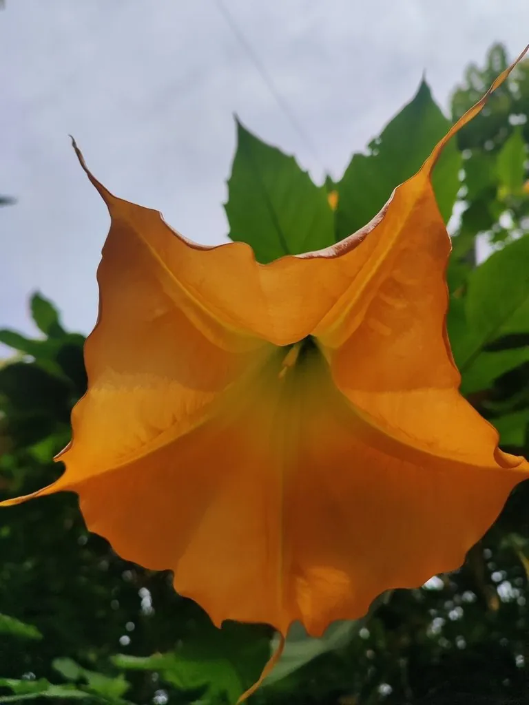

灌木与花木 · 植物界
黄花曼陀罗 Brugmansia aurea

茄科曼陀罗属常绿灌木，花橙黄至金黄色、下垂如裙，原产南美安第斯山，全株有毒，仅供专业栽培观赏。
- 分类
- 门被子植物门纲木兰纲目茄目科茄科属曼陀罗属
- 栖息环境
- 南美安第斯山区海拔 2000–3000 米地带，喜温暖湿润、阳光充足
- 地理分布
- 原产厄瓜多尔、哥伦比亚等地；中国华南、西南有引种栽培
- 保护级别
- IUCN 暂无评估；野生种群受栖息地破坏影响，栽培较普遍
物种志
黄花曼陀罗为常绿灌木或小乔木，高 2–4.5 米，茎干粗壮，幼枝被细毛。叶片卵状披针形，长 15–25 厘米，边缘具疏齿。花单生于叶腋、下垂，花冠喇叭状，橙黄色至金黄色，长 15–20 厘米，花冠檐部具 5 个尖裂片，夜间散发香气；果实纺锤形，表面光滑。
本种原产厄瓜多尔、哥伦比亚等南美安第斯山区，喜温暖湿润、阳光充足的环境，在中国南方与东南亚常作观赏植物栽培。它的花大色艳，是热带庭园中的焦点植物，但全株含东莨菪碱、莨菪碱等托品烷类生物碱，误食花、叶或果实可致口干、瞳孔散大、幻觉、心律失常甚至死亡。栽培时需远离儿童、宠物与牲畜，修剪后应洗手，不可将其当作民间草药使用。
形态与习性
- 株高2–4.5 米，茎干粗壮
- 花期5–10 月，花橙黄至金黄色
- 果期秋季，果实纺锤形
- 光照喜光，每天需充足直射光
- 水分喜湿润，忌干旱与积水
- 土壤肥沃、排水良好的沙质壤土
- 毒性全株含托品烷类生物碱，禁止食用
趣味知识
- 黄花曼陀罗的花冠像一条倒挂的金色长裙，在夜色中香气尤浓。
- 它原产于安第斯山区，当地印第安人曾将其用于宗教仪式，但剂量极难掌握。
- 托品烷类生物碱中毒会出现幻觉、躁动与瞳孔散大，严重时可致死。
- 园艺上它有几个重瓣与白边品种，但毒性并不会因品种不同而消失。